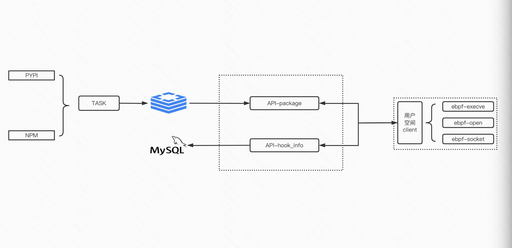

利用ebpf监控包管理器供应链攻击
之前做pypi源恶意包监控的方案中使用import hook的方式，即在load_module的过程中做hook劫持，当时该方案存在一定的局限性比如python2中exec实际是statement。最近在学习ebpf故计算利用ebpf做更加通用（pypi、npm）的类似hids的方案，利用两个周末完成相关代码实现并做部分恶意包验证，一定效果的同时也发现预期的噪声过多等问题。
0x01 项目图
项目Github 
1.1 环境依赖
- ebpf
1
apt install -y bison build-essential cmake flex git libedit-dev libllvm11 llvm-11-dev libclang-11-dev python zlib1g-dev libelf-dev libfl-dev clang python3-distutils
- server程序依赖
1
2
3mysql
redis
docker
1.2 ebpf-supply-chain
ebpf采集hook信息、并上报到server端 1
2
3
4
5
6
7
8
9
10
11
12
13
14
15
16
17
18
19
20
21
22
23
24
25
26
27
28
29
30kevinsa@ubuntu ~/g/s/g/k/ebpf-supply-chain (master)>
tree -L 2
.
├── docker-compose.yml
├── Dockerfile // docker ebpf-supply-chain:base为安装python3 & pip3的基础镜像
├── global
│ └── setting.go
├── go.mod
├── go.sum
├── main.go
├── README.md
├── service
│ ├── biz // 从server获取检测任务
│ ├── event_biz.go
│ ├── event_socket.go
│ ├── event_sys_exec.go
│ ├── event_sys_open.go
│ ├── event_sys_write.go
│ ├── modules.go
│ ├── register.go
│ ├── socket // socket相关ebpf
│ ├── sysexec // exec相关ebpf
│ ├── sysopen // 文件打开相关ebpf
│ └── syswrite // 文件写入相关ebpf
└── utils
├── convert_utils.go
├── post_hook_info.go // hook信息上报
├── post_sys_exec_hook_info.go // hook信息上报
├── post_sys_open_hook_info.go // hook信息上报
└── post_sys_write_hook_info.go // hook信息上报
1.3 ebpf-supply-chain-server
1 | kevinsa@ubuntu ~/g/s/g/k/ebpf-supply-chain-server (master)> tree -L 2 |
0x02 ebpf
eBPF可以使用kprobe，故可以用于实现做恶意包利用时的沙盒检测。ebpf一般由c语法来做编写然后利用llvm编译ebpf字节码后做加载，也有bcc等高级语言的封装，最后采用的是cilium ebpf，对于cilium ebpf只需要部分c逻辑，go generate会做bpf2go的封装逻辑，后续负责逻辑些golang即可。
hook sys_open
检测包管理恶意包项目中做检测的hook点为：kprobe/do_sys_openat2、fentry/tcp_connect、kprobe/sys_execve，以hook系统open调用为例子
1 |
|
使用ring buffer map来准备和发送数据到用户空间，在用户空间使用golang对hook到的数据做二次处理即可。
0x03 问题&留坑
3.1 问题
- ebpf监控力度粗于python3 rasp的方式，导致系统级别噪声过多，在后置聚合、关联、检测能力较弱的情况下，较难完成预期的恶意包判责，易陷入误报/漏洞的跷跷板中。
留坑
两个周末完成的工程中留下的小坑也不少，后续如有时间会做fix - ebpf中sys_exec只获取pid，缺失后置判责逻辑中的强需的avg信息 - server中main.py获取新增pypi package中应修改为threading+asyncio方式，且目前仅获取新增package未判断version粒度变化 - server中的runner.py判责逻辑只做简单黑白名单规则，没有根据多hook信息中pid做关联、聚合等逻辑
参考1-效果
以检测到的部分恶意pypi包为例 ### 175.24.100.2 比较出名的“175.24.100.2”恶意包 1
2
3
4
5
6
7
8
9
10
11
12
13
14
15
16
17
18
19
20
21
22
23
24
25+------------------------------------------+------------+
| package | version |
+------------------------------------------+------------+
| easdyict | 1.0.0 |
| ueler | 1.0.0 |
| fliemagic | 1.0.0 |
| cryptograhpy | 1.0.0 |
| uitls | 1.0.0 |
| efficientent-pytorch | 1.0.0 |
| vitualenv | 1.0.0 |
| demjon | 1.0.0 |
| imutlis | 1.0.0 |
| m1niexception | 0.1 |
| pydatamover | 0.0.2 |
| waveradio-v0-0-2 | v0.0.2 |
| bigchaindbnextgen | 2.2.2.2 |
| newtorks | 1.0.0 |
| benchmark-chrome | Chrome |
| azure-textanalytics | 6969.99.99 |
| btcspendfrom | 20.3.4 |
| coin-master-hack-coins-free-working-2022 | 0.13 |
| aioli-client | client |
| xmpuspus | 0.0.1 |
+------------------------------------------+------------+
20 rows in set (0.00 sec)
talmalfu
1 | import builtins |
101.32.99.28
1 | mysql> select hook_type,rule_name,package,version,score from supply_chain_evil_result where status=1; |
1 | kevinsa@ubuntu ~/D/e/coding-dojo-0.1.0> cat setup.py |